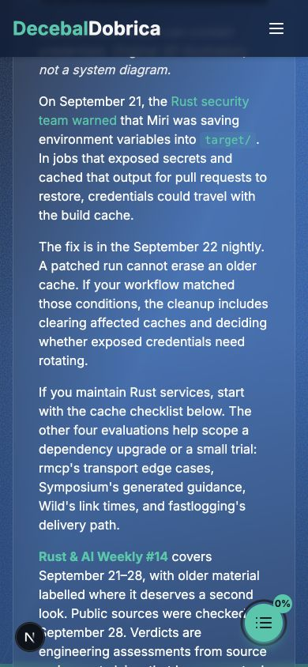
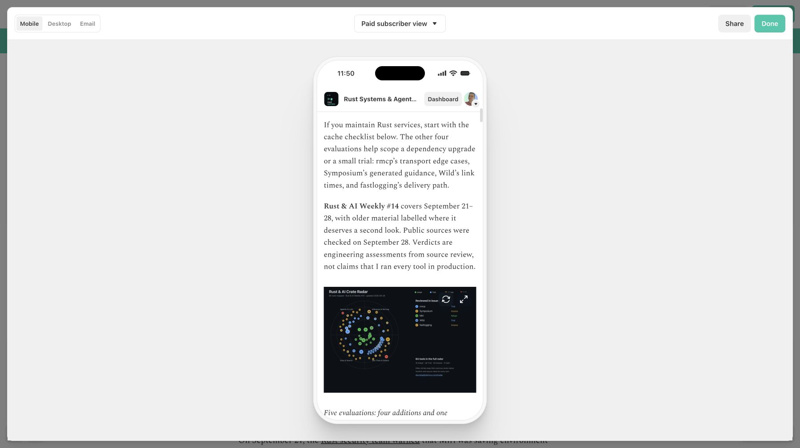
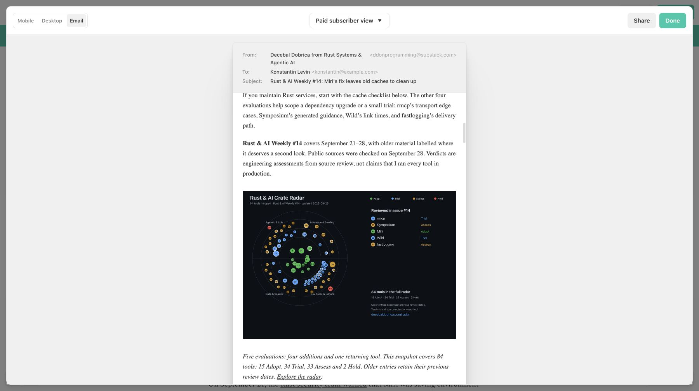

September 28, 2026. Final editorial body: 2,676 words; longest paragraph 65 words. References: issue #13's September 22 readability correction and the September 28 Lara-framework revision of this issue. Writing and publishing assets are ready for review; publication is not authorized by this run.
Article · Email HTML · Saved Substack draft · Evidence ledger
| Check | Result |
|---|---|
| Site Markdown body | 56 paragraphs, 8 main sections, 7 subheadings, 8 lists, 2 images |
| Paragraph ceiling | 65 words; none over 100 |
| Mobile site | 390×844 viewport; document width 390px, no article overflow |
| Substack persistence | Saved and reloaded; matching body after smart-quote, whitespace and native accessibility bullet normalisation |
| Links and images | All article links retained; both images load on the revised site. Both uploaded Substack images also load in the final pre-publication check |
| Radar | 84 tools: 15 Adopt, 34 Trial, 33 Assess, 2 Hold; sidebar no longer clips |
| X reply chain | 6 posts: 235 / 223 / 221 / 250 / 244 / 222 weighted characters |



The user confirmed Everyone on September 28. Git/site publication must precede the newsletter send. The settled editor still displays “Near email length limit”. An earlier report incorrectly marked it cleared after checking too soon following reload. Saved draft text and source links were verified after reload. Fresh Substack mobile and email previews of the final revision were inspected, including the closing reader question. Delivered-client clipping has not been tested. Canonical article/images need deployment before social or syndication launch. No push, merge, send, publishing or scheduling occurred.
Sources and caveats are in the ledger. Direct HTTP checks returned empty 404s for three crates.io pages; Chrome displayed the expected crates and versions, and registry APIs verified exact metadata. Other article sources returned successfully. Preview results do not claim independent benchmark reproduction.